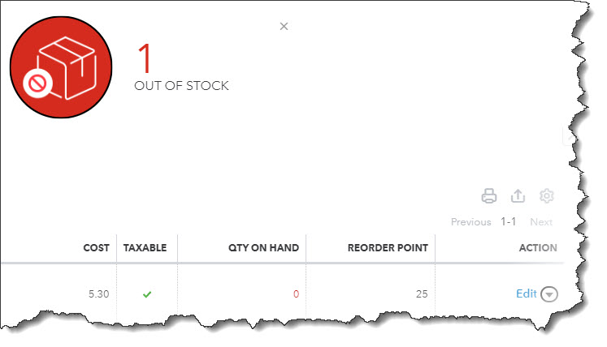
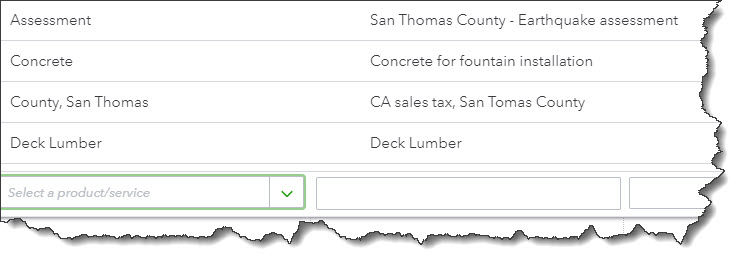

Last month, we created records for products and services. Now, we’ll talk about where they’re used in QuickBooks Online.
If you’ll recall, we went over two product-related concepts in QuickBooks Online in last month’s column. We first discussed getting the site ready for creating and using product and service records. You click the gear icon in the upper right and select Account and Settings, then click the Sales tab to indicate your preferences.
To create a product or service record, you hover your mouse over Sales in the left vertical pane on the main page and click Products and services. Click New in the upper right corner and open a blank record for an Inventory or Non-inventory part, a Service, or a Bundle (assembly). Once you complete a record and save it, it will appear in the list back on the Product and services page.
Working with Products and Services
That’s where we’ll start today, on the Products and services screen. This is a comprehensive table, a dashboard (or home page) for your products and services. It displays real-time information about your items’ pricing and inventory levels, as well as their type and tax status. At the top of the page, you’ll see big, colorful buttons that provide a total of the number of items that are low on stock or out of stock. When you click on one, a list of those products appears.
QuickBooks Online’s Products and services page displays inventory levels and warns you when your stock is low and at zero.
Each row on this screen contains details about the item listed there, like Description, Sales Price and Cost, and Qty On Hand. If you look down at the end of the row, you’ll see options for several types of Actions: Edit, Make inactive, Run report, and Duplicate. Click the gear icon above the table to modify the columns in the table.
The More menu at the top of the screen contains more options: Manage categories, Run reports, and Price rules. If you want to know what actions you can take on multiple items simultaneously, check the box in front of each and click the Batch actions menu, over to the right (Adjust quantity, Reorder, etc.).
Warning: Be very careful using the Adjust quantity option. There are legitimate reasons for employing it, but you need to make very sure that you understand how this will affect other areas of your accounting. Please ask us if you’re unsure.
Using Products and Services in Transactions
Once you start using product and service records in transactions, you’ll see why we suggested that you create those early on and make them as comprehensives as possible. While you can add products and services in the process of creating an invoice, for example, it’s much easier if you have them ready to go.
Let’s look at a sales receipt to see how this works. Click +New in the upper right corner and select Sales receipt. Select a Customer in the first field and verify that the related fields on the form were filled out correctly. Check and make any changes necessary in the Sales receipt date, Payment method, and Deposit to fields.
Once you’ve built up a list of products and services, they’ll be available when you create transactions.
Enter the Service Date, and then click the down arrow in the field under Product/Service. The top of the list has an entry labeled +Add new. Click it if you need to add a product or service on the fly, or just select the existing one that you want. QuickBooks Online will fill in the Rate, Amount, and Tax (status). You only have to enter the Qty (quantity) that you’re selling.
If you have more items or services to add, you can do so on the next line(s). When you’re done, check the numbers in the lower right and save the transaction. QuickBooks Online will adjust your inventory to account for any items you just sold. You can see this change by going back to the Products and Services screen. Or you can run reports, including:
Supply Chain Woes?
It seems that the serious supply chain problems we were experiencing in previous months have eased up some, but you may still be having trouble stocking some items. We hope this isn’t affecting you too much.
QuickBooks Online, though, can help ensure that you know ahead of time when you must reorder. Its inventory-tracking capabilities can also alert you to items that aren’t selling well, so you don’t get overstocked on anything. And the ability to pull up product and service records when you’re creating transactions saves time and keeps your inventory levels accurate. Please let us know if you need assistance with this element of your accounting – or any of QuickBooks Online’s other tools.